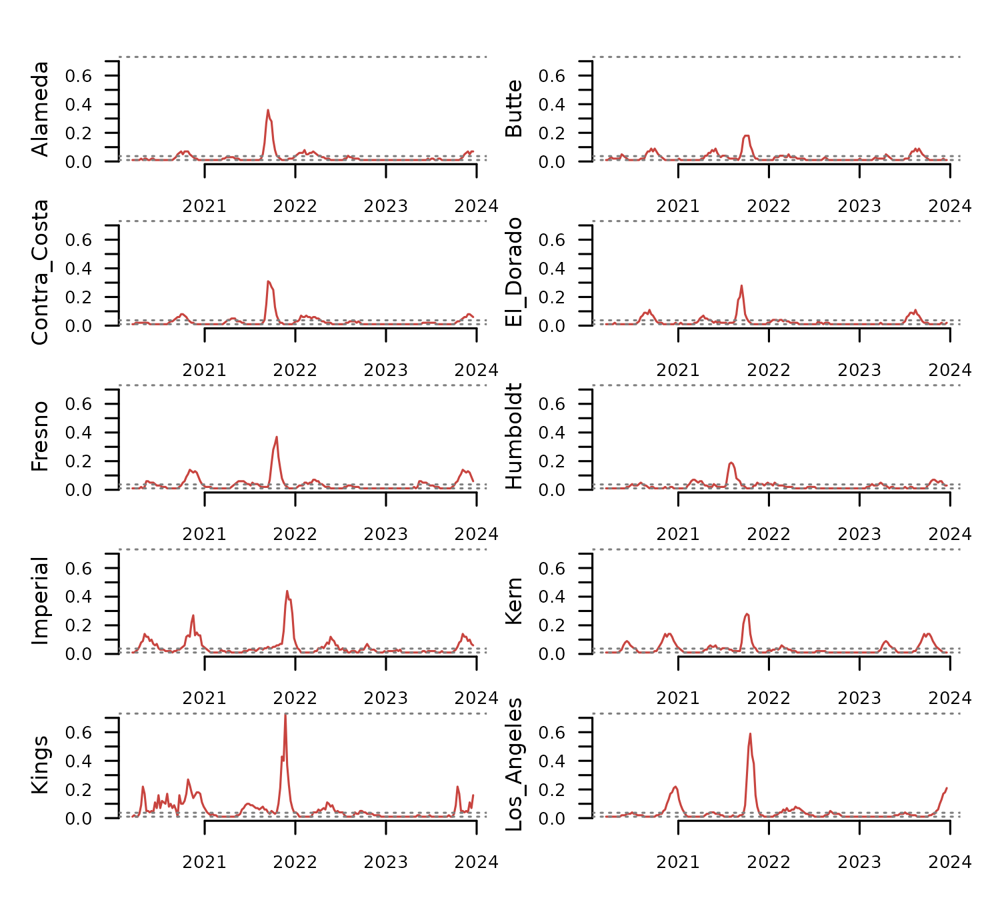

Mapping Time Series Dissimilarity
Source:vignettes/articles/mapping_dissimilarity.Rmd
mapping_dissimilarity.Rmd#WORK IN PROGRESS
Summary
Many time series happen at a given space, which can be represented
either by a polygon, or by a pair of coordinates. The R package
distantia, albeit focused on time series comparison, offers
limited support to map time series dissimilarity.
This article illustrates this concept with several examples.
Setup
#> Loading required namespace: remotes
#> Installing package into '/home/runner/work/_temp/Library'
#> (as 'lib' is unspecified)
#> Loading required namespace: tmap
#> Using github PAT from envvar GITHUB_PAT. Use `gitcreds::gitcreds_set()` and unset GITHUB_PAT in .Renviron (or elsewhere) if you want to use the more secure git credential store instead.
#> Downloading GitHub repo r-tmap/tmap@HEAD
#> abind (NA -> 1.4-8 ) [CRAN]
#> colorspace (NA -> 2.1-1 ) [CRAN]
#> munsell (NA -> 0.5.1 ) [CRAN]
#> labeling (NA -> 0.4.3 ) [CRAN]
#> farver (NA -> 2.1.2 ) [CRAN]
#> terra (NA -> 1.8-5 ) [CRAN]
#> lazyeval (NA -> 0.2.2 ) [CRAN]
#> viridisLite (NA -> 0.4.2 ) [CRAN]
#> sp (NA -> 2.1-4 ) [CRAN]
#> scales (NA -> 1.3.0 ) [CRAN]
#> RColorBrewer (NA -> 1.1-3 ) [CRAN]
#> raster (NA -> 3.6-30 ) [CRAN]
#> png (NA -> 0.1-8 ) [CRAN]
#> leaflet.p... (NA -> 2.0.0 ) [CRAN]
#> htmlwidgets (NA -> 1.6.4 ) [CRAN]
#> crosstalk (NA -> 1.2.1 ) [CRAN]
#> rapidjsonr (NA -> 1.2.0 ) [CRAN]
#> sfheaders (NA -> 0.4.4 ) [CRAN]
#> jsonify (NA -> 1.2.2 ) [CRAN]
#> geometries (NA -> 0.2.4 ) [CRAN]
#> XML (NA -> 3.99-0.17) [CRAN]
#> dichromat (NA -> 2.0-0.1 ) [CRAN]
#> stars (NA -> 0.6-7 ) [CRAN]
#> lwgeom (NA -> 0.2-14 ) [CRAN]
#> leaflet (NA -> 2.2.2 ) [CRAN]
#> geojsonsf (NA -> 2.0.3 ) [CRAN]
#> spacesXYZ (NA -> 1.3-0 ) [CRAN]
#> stringdist (NA -> 0.9.14 ) [CRAN]
#> tmaptools (NA -> 3.1-1 ) [CRAN]
#> leafsync (NA -> 0.1.0 ) [CRAN]
#> leaflegend (NA -> 1.2.1 ) [CRAN]
#> leafgl (NA -> 0.2.2 ) [CRAN]
#> leafem (NA -> 0.2.3 ) [CRAN]
#> data.table (NA -> 1.16.4 ) [CRAN]
#> cols4all (NA -> 0.8 ) [CRAN]
#> Installing 35 packages: abind, colorspace, munsell, labeling, farver, terra, lazyeval, viridisLite, sp, scales, RColorBrewer, raster, png, leaflet.providers, htmlwidgets, crosstalk, rapidjsonr, sfheaders, jsonify, geometries, XML, dichromat, stars, lwgeom, leaflet, geojsonsf, spacesXYZ, stringdist, tmaptools, leafsync, leaflegend, leafgl, leafem, data.table, cols4all
#> Installing packages into '/home/runner/work/_temp/Library'
#> (as 'lib' is unspecified)
#> ── R CMD build ─────────────────────────────────────────────────────────────────
#> * checking for file ‘/tmp/RtmpLSXh54/remotes2eb911b90569/r-tmap-tmap-33d7973/DESCRIPTION’ ... OK
#> * preparing ‘tmap’:
#> * checking DESCRIPTION meta-information ... OK
#> * checking for LF line-endings in source and make files and shell scripts
#> * checking for empty or unneeded directories
#> * building ‘tmap_3.99.9003.tar.gz’
#> Installing package into '/home/runner/work/_temp/Library'
#> (as 'lib' is unspecified)
#> Loading required namespace: dplyr
library(distantia)
library(dplyr)
library(tmap)
library(future)
library(parallelly)
future::plan(
future::multisession,
workers = parallelly::availableCores() - 1
)
tsl <- distantia::tsl_initialize(
x = distantia::covid_prevalence,
name_column = "name",
time_column = "time"
)
distantia::tsl_plot(
tsl = tsl[1:4]
)
df <- distantia::distantia(
tsl = tsl,
lock_step = TRUE
)